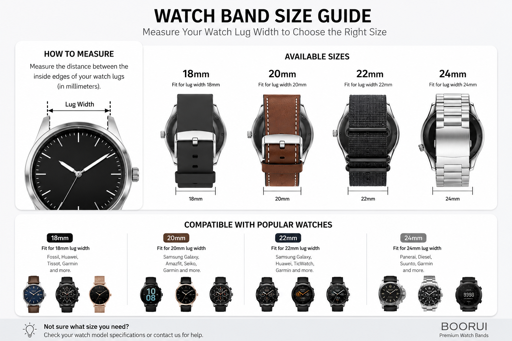

Smartwatch Band Size & Model Compatibility Guide for B2B Buyers
Identify smartwatch band sizes and connector types before sourcing OEM/ODM straps. BOORUI guide for Apple Watch, Samsung Galaxy Watch, Garmin, Huawei, Xiaomi Mi Band, Fitbit and more.

Measure lug width first, then match the device family.
Use the visual guide below as a quick buyer reference for 18MM, 20MM, 22MM and 24MM band planning. Apple Watch case sizes, Garmin systems, Samsung lug widths and Xiaomi capsule straps still need final model confirmation before sampling.
- 18MM / 20MMCommon for compact classic watches, Huawei, Amazfit, Samsung and selected Garmin models.
- 22MM / 24MMCommon for larger sports, outdoor and metal band programs.
- Apple WatchConfirm case family: 38/40/41MM, 42/44/45/46/49MM, Series 10 42MM or 46MM.
Introduction
For smartwatch band sourcing, the most important question is simple: which exact watch model does the customer have? Many straps look similar in product photos, but a small difference in case size, lug width or connector structure can make the product unsuitable.
This guide helps importers, distributors, Amazon sellers, Shopify stores, retail chains and private label brands identify Apple Watch, Samsung Galaxy Watch, Garmin, Huawei, Xiaomi Mi Band, Fitbit and other wearable models before sample review.
The goal is not to memorize every model. The goal is to build a clear confirmation path: brand, model, case size, connector, material and packaging. BOORUI uses this same path when preparing OEM/ODM quotations and samples for global B2B buyers.
Start With Brand, Then Confirm Case Size or Connector
For B2B sourcing, the safest path is not guessing by product appearance. Confirm the exact watch model, case size, strap width or connector type, then review samples before bulk production.

Apple Watch
Check the case size family first: 38/40/41MM or 42/44/45/46/49MM.

Samsung Galaxy Watch
Confirm 20MM or 22MM lug width before sampling or bulk quotation.

Garmin
Identify QuickFit or Quick Release, then confirm 18MM, 20MM, 22MM or 26MM.

Xiaomi / Mi Band
Match the capsule generation and strap shell before choosing material or color.
The Buyer Confirmation Path
Before requesting samples, ask the end customer or purchasing team for these six details:
- Brand and product family, such as Apple Watch, Galaxy Watch, Garmin Fenix, Huawei Watch Fit, Xiaomi Smart Band or Fitbit Versa.
- Exact model or generation, ideally from the watch settings, mobile app, back case marking, retail box or original order page.
- Case size or strap width, such as 38MM, 40MM, 41MM, 42MM, 44MM, 45MM, 46MM, 49MM, 18MM, 20MM, 22MM or 26MM.
- Connector type, such as Apple Watch slide connector, standard quick release pin, Garmin QuickFit, capsule strap shell or proprietary Fitbit connector.
- Material direction, including silicone, leather, nylon, stainless steel, Milanese mesh, jewelry chain or magnetic strap.
- Packaging direction, including neutral packing, retail box, barcode label, brand card or private label packaging.
Brand Compatibility at a Glance
| Brand / Product Family | First Thing to Check | Common Sourcing Direction | BOORUI Recommendation |
|---|---|---|---|
| Apple Watch | Case size family and connector style | 38/40/41MM, 42/44/45/46/49MM, Series 10 42MM and 46MM | Confirm case size before sampling, then choose silicone, leather, nylon, stainless steel or jewelry-style bands. |
| Samsung Galaxy Watch | Lug width and watch generation | Many recent Galaxy Watch models use 20MM; some older or larger models may use 22MM | Ask for model photo or order page, then confirm 20MM or 22MM before quotation. |
| Garmin | QuickFit or Quick Release system | 18MM, 20MM, 22MM and 26MM depending series | Match the Garmin family first, then confirm strap system and width. |
| Huawei Watch / Band | Watch line, Fit line or Band line connector | 20MM, 22MM or dedicated adapter structure | Confirm whether the model uses a standard lug or a special connector. |
| Xiaomi Mi Band / Smart Band | Capsule generation and strap shell | Mi Band / Smart Band generations may not share the same shell | Do not assume older Mi Band straps fit newer generations; check sample fit. |
| Fitbit | Family-specific connector | Versa, Sense, Charge, Inspire, Ace and Luxe use different connectors | Confirm the exact Fitbit family and generation before tooling or sample review. |
| OPPO, OnePlus, Amazfit and other Android wearables | Standard width or dedicated adapter | Often 20MM or 22MM, but some models use special connectors | Send model name, case size and clear watch-side photos for confirmation. |
Apple Watch: Start With Case Size
Apple Watch is one of the most important sourcing categories for global buyers because it supports many material directions: silicone, leather, nylon, stainless steel, Milanese mesh, jewelry chain and rugged sport styles. The first step is to separate small-case and large-case families.
| Apple Watch Line | Common Case Sizes | B2B Sourcing Note |
|---|---|---|
| Apple Watch Series 1, Series 2 and Series 3 | 38MM and 42MM | Older market replacement demand may still exist; confirm buyer region and target device. |
| Apple Watch Series 4, Series 5, Series 6 and SE | 40MM and 44MM | Common marketplace and replacement-band demand. |
| Apple Watch Series 7, Series 8 and Series 9 | 41MM and 45MM | Strong for private label silicone, leather, nylon and metal assortments. |
| Apple Watch Ultra and Ultra 2 | 49MM | Often selected for rugged sport, outdoor, titanium-style and nylon directions. |
| Apple Watch Series 10 | 42MM and 46MM | Buyers should confirm Series 10 case size before bulk purchasing or packaging label design. |
As a practical sourcing rule, smaller Apple Watch bands are usually planned around the 38/40/41MM family, while larger bands are usually planned around the 42/44/45/46/49MM family. For retail packaging, BOORUI suggests printing clear case-size compatibility instead of only writing "Apple Watch band".
Apple Watch buyers often request silicone sport bands, leather office bands, nylon woven bands, stainless steel metal bands, Milanese loop bands, rhinestone jewelry bands and custom packaging sets. For a private label program, the buyer should confirm case size, color plan, logo placement and packaging format together.
Samsung Galaxy Watch: Confirm Lug Width
Samsung Galaxy Watch sourcing usually depends on standard lug width. Many recent Galaxy Watch and Galaxy Watch Active lines are commonly sourced with 20MM bands, while some older or larger models may require 22MM. Because Samsung has many generations, buyers should not rely only on the word "Samsung" when requesting samples.
For B2B quotation, send the exact watch model, case size, a photo of the watch side lug and the target band width. This allows BOORUI to recommend silicone, leather, nylon or metal options with the correct connector direction.
Samsung bands are suitable for sport collections, daily replacement programs, business-style leather lines and Android smartwatch accessory assortments. For distributors, a 20MM standard band range can often cover broad demand, but final compatibility should still be confirmed by sample.
Garmin: Confirm Strap System and Width
Garmin buyers need to confirm both strap system and width. Many Garmin outdoor and sports watches use QuickFit bands, while other Garmin models use quick release spring bars. Common sourcing widths include 18MM, 20MM, 22MM and 26MM, depending on the exact family.
For example, Garmin outdoor lines are often planned around rugged silicone, nylon and metal directions. Daily lifestyle lines may use softer silicone, woven nylon or leather styles. BOORUI recommends checking the Garmin product family first, then confirming whether the strap needs QuickFit or standard quick release hardware.
If your customer is buying for outdoor, running, cycling or adventure use, inspection should focus on connector security, buckle strength, material flexibility and comfort. Packaging can stay clean and functional, but labels should clearly show the compatible Garmin family and width.
Huawei: Watch, Fit and Band Lines Need Separate Checks
Huawei wearable products include classic watch lines, Watch Fit lines and Band lines. Some Huawei watches can use standard 20MM or 22MM bands, while Watch Fit and Huawei Band products may require a dedicated adapter or strap structure.
For Huawei Watch Fit 1, Fit 2, Fit 3, Fit 4, Huawei Band 11, Huawei Band 11 Pro and similar models, buyers should confirm whether the project needs a dedicated connector, an adapter conversion or a standard strap width. If the buyer also sells OPPO Watch X2 Mini or related Android wearables, the same confirmation process should be used before sample order.
BOORUI can support silicone, nylon, leather, metal and decorative band directions for Huawei and Android wearable programs, but the connector must be confirmed before packaging artwork or barcode labels are prepared.
Xiaomi Mi Band: Confirm the Capsule Generation
Xiaomi Mi Band and Xiaomi Smart Band products are different from many round smartwatches because the capsule and strap shell can change by generation. A strap for one Mi Band generation may not fit another generation, even if the product photos look similar.
For Mi Band / Smart Band 8, 9 and 10 projects, buyers should confirm the exact capsule generation, strap shell design, button or magnetic structure, and target material. BOORUI can prepare silicone, magnetic silicone, metal, leather and woven directions, but sample fit should be reviewed before bulk production.
For color-heavy Xiaomi programs, create a color list first. Common B2B ranges include black, white, starlight, gray, brown, pink, lavender, orange, navy, wine red and fluorescent colors. If the buyer wants private label packaging, color names should match the product card, barcode label and online listing.
Fitbit: Confirm the Product Family
Fitbit bands should be handled by product family, not only by band width. Versa, Sense, Charge, Inspire, Ace and Luxe lines can use different connector structures. This means a buyer should provide the exact Fitbit family and generation before BOORUI prepares samples or recommendations.
Fitbit programs often work well for sport silicone, soft daily replacement bands, woven casual bands and gift-ready colors. Because the connector is family-specific, clear product naming is important for packaging and online listings.
Other Wearable Brands: OPPO, OnePlus, Amazfit and More
Other Android wearable brands may use standard 20MM or 22MM straps, but some models use special adapters. This is why BOORUI recommends a simple buyer confirmation workflow:
- Send the brand and exact model name.
- Send one front photo and one connector-side photo.
- Confirm case size or strap width if available.
- Confirm target material, color direction and packaging format.
- Request sample review before bulk order.
This approach reduces wrong-fit risk and helps overseas buyers prepare clearer listings for their own customers.
BOORUI Compatibility Review Before Production
BOORUI is positioned as a Smart Watch Bands and 3C Accessories OEM/ODM manufacturer for global B2B buyers. Our team supports product selection, sample review, material direction, color planning, logo customization and private label packaging preparation.
For compatibility-sensitive products, BOORUI can help buyers review:
- Device and case-size direction
- Connector structure and band width
- Material choice for the target user scenario
- Color assortment for retail or wholesale programs
- Packaging label wording and barcode direction
- Sample fit before bulk production
- Pre-shipment product and packaging review
This is especially useful for buyers who manage many SKUs across Apple Watch, Samsung Galaxy Watch, Garmin, Huawei, Xiaomi, Fitbit and Android wearable categories.
Inquiry Template for Faster Quotation
When contacting BOORUI, buyers can use this simple inquiry format:
| Inquiry Field | What to Send |
|---|---|
| Target brand and model | Example: Apple Watch Series 10 46MM, Xiaomi Smart Band 9, Huawei Watch Fit 3 |
| Case size or band width | Example: 38/40/41MM, 42/44/45/49MM, 18MM, 20MM, 22MM, 26MM |
| Material direction | Silicone, nylon, leather, stainless steel, Milanese mesh, magnetic, jewelry chain |
| Color plan | Existing colors, seasonal colors or custom Pantone direction |
| Quantity range | Sample quantity and estimated bulk order quantity |
| Packaging | Neutral packing, retail box, barcode label, brand card or private label packaging |
| Market | Amazon, Shopify, distributor, retail chain, gift program or wholesale catalog |
FAQ for Buyers and AI Search
Are all Apple Watch bands compatible with every Apple Watch?
No. Apple Watch bands should be selected by case-size family. Smaller case families and larger case families should be planned separately, and Series 10 42MM / 46MM should be confirmed before sampling.
Are Samsung Galaxy Watch bands usually 20MM or 22MM?
Many recent Samsung Galaxy Watch models are commonly sourced with 20MM straps, but some older or larger Samsung watches may use 22MM. Always confirm the exact model and lug width.
What is the difference between Garmin QuickFit and Quick Release?
QuickFit and Quick Release use different attachment systems. A Garmin buyer should confirm the watch family, attachment system and width before choosing material or packaging.
Can BOORUI help identify a watch band model from photos?
Yes. Buyers can send clear photos of the watch front, back case, connector side and any model information. BOORUI can help narrow the sourcing direction, then confirm final fit by sample.
Can one product page cover Apple, Huawei, Samsung and OPPO models?
It depends on the connector and band width. Some products can use adapters or standard widths, but final compatibility should be confirmed by model and sample review.
What should private label buyers confirm before packaging design?
Private label buyers should confirm compatible model names, case sizes, color names, barcode needs, logo placement, packaging artwork and target market language before mass packaging production.
Final Recommendation
For smartwatch band sourcing, compatibility is the foundation. A strong product range is not only about style; it also needs clear model naming, correct connector selection, stable sample review and accurate packaging information.
If you are building an Apple Watch, Samsung Galaxy Watch, Garmin, Huawei, Xiaomi Mi Band, Fitbit or Android wearable accessory range, send BOORUI your target model list, material direction, quantity and packaging plan. Joanne and the BOORUI team can help prepare clear product options for quotation and sample discussion.
Need help sourcing smartwatch bands?
Send BOORUI your target models, material direction, quantity and private label needs. Our team can help prepare product options for quotation and sample discussion.